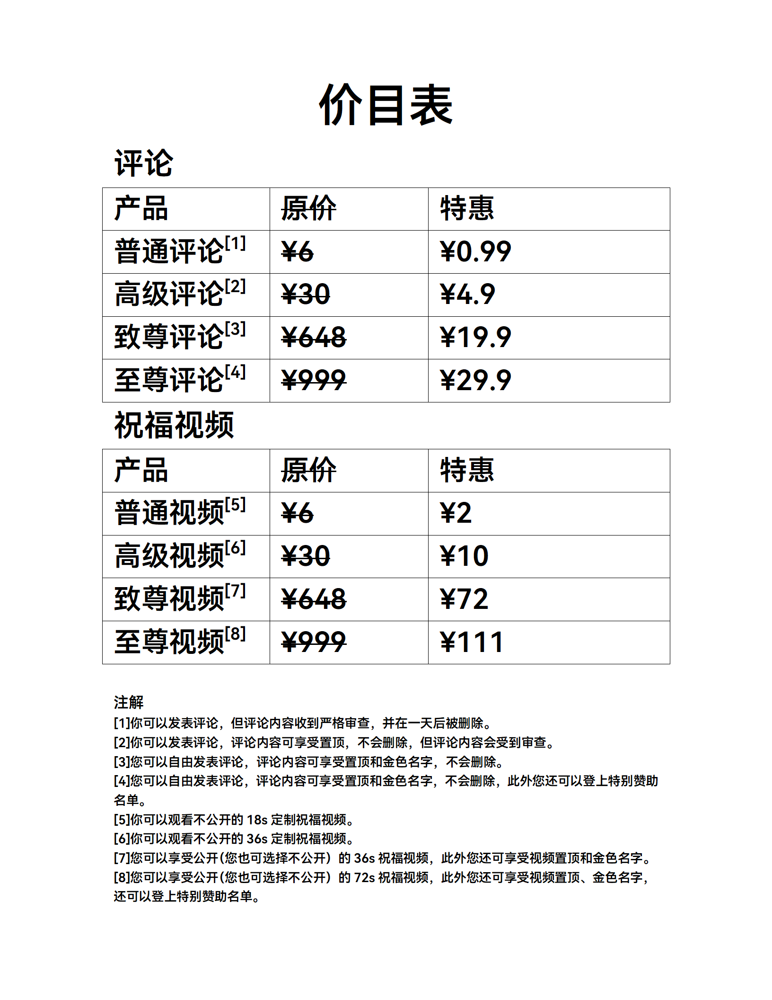
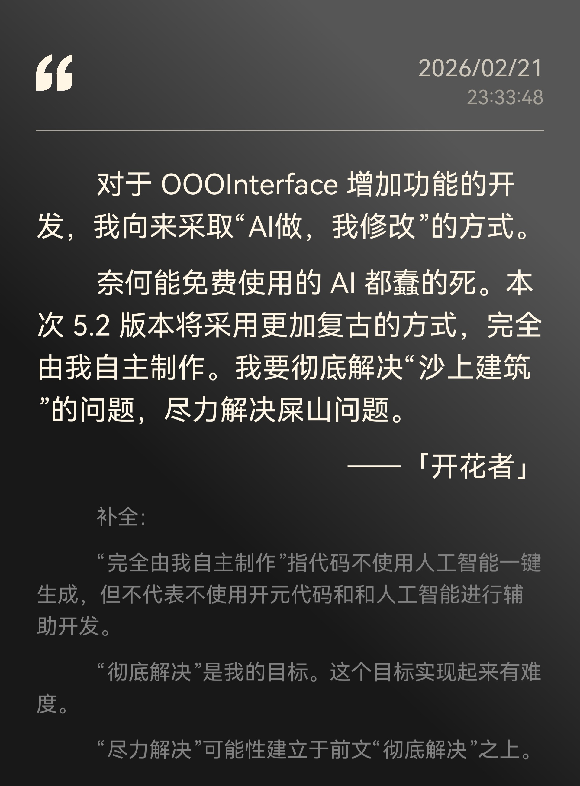
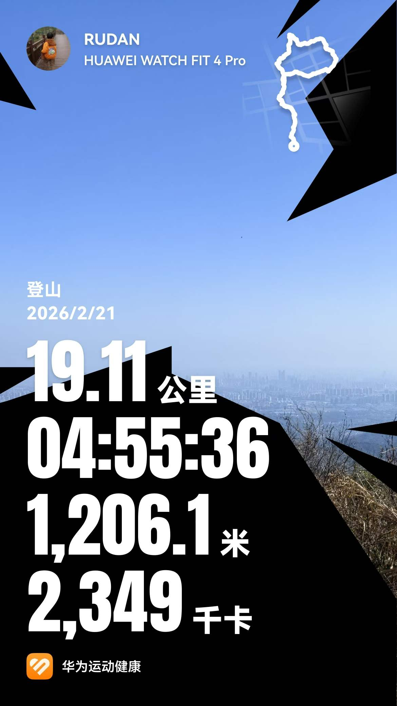

滚轮缩放 | 拖动移动 | 双击或点击关闭
出于一些原因，我修改了CHAPTER网址。
不过不必担心：所有内容都迁移过来了！
此外，我调整了赞助榜单（此前ZSCC等人恶意修改榜单，为实现公平，先已修改为真是赞助金额）和部分页面显示效果。
非常高兴的告诉大家，OOOInterface5.2项目重启了！
5.2更新内容概览：
*现在主要是面向InterfacePro（Refiner）用户的测试版，且因为是测试版bug较多，暂时不公开下载体验。
另外，以后我可能会在OOOInterface官方网站发布5.2的最新动态等，若有需要可以关注。
暂无
暂无
暂无
经过观众建议和一些讨论，决定将网页更名为ByRUDAN Chapter。
Chapter有 章节 的意思，也被用于人身经历等。
这个月底会推出一个网页的 logo（具体样式待定）。在新的 logo 出来前为过渡时期，可能会出现名称混用的状况，还请见谅。
此前（寒假）的新闻板块是每天更新的。出于收集新闻的难度等方面问题，此后会改为每周末更新一次。更长的时间也将带来更精致的更丰富内容，敬请期待。
最近更新次数比较频繁。之前在 ZSCC Time里给出的那个版本规划和现行的有些不一样，其原因是Z在一些页面的设计中出现了小失，造成的后果比较严重。
手机版的样式还在不断的优化。W表示其高度重视移动版的观看效果（其实就是自己没电脑了，只能拿手机看），进程安排会优先优化手机版的显示效果。
这里再次列一个表。关于未来的规划。
W对Z制作的ByRUDAN产品给出了极高的评价，并予其无限期的休假。
OOOInterface 5.2 Release大概率还是能在五一劳动节后发布的，对此不用太担心。
在阅读全文的过程中，你看到了一些陌生的名字（很多人应该能够猜出来它们代表什么）。在这里做出一些详细的解释。
此后，如果在ByRUDAN相关内容中的称呼将用这种方式。它带来了较高的效率，而且不用担心记不住的问题。
前文讲过相关内容，就今天一日来看，现在的形势并没有相比原来有太多的改变。内容方面一周两三次更新还是能够做到的。
我现在通常代替 W 将内容上传，而每一次的内容制作都需要花大约一小时的时间。
作为初中生，有一定的学业压力。后面的月考、期中、期末考前，断坑将是很正常的，也希望大家理解。
（哇哇哇哇哇终于宝贝的有人投稿了）
一位观众（同时也是米哈游崩坏系列游戏的玩家）制作并投搞了一首音乐——W和Z都表示对此十分喜爱。它可以被用作起床的闹钟铃声，从舒缓到激烈，过渡自然。
如果你也喜欢，可以从网页中把它下载下来；如果不方便下载，也可以使用邮箱来向W索求。
这个网页自诞生起就没个正式的名字。我总是叫其ByRUDAN网页，或者曾经叫ByRUDAN的公告，但总归不算正式名字。所以，如果你有想法，非常欢迎提供一些思路给我！
我有很多称呼，但似乎都不太方面用于这里。原名涉及隐私，不方便展示；WYJCrtu固然好但又不方便读；RUDAN这个名字容易和ByRUDAN弄混，也不方便用；过去我用「开花者」自称，但现在开花者不止一个，这个就也不适用。所以，如果你有想法，非常欢迎提供一些思路给我！
某些人偷工减料，自己发现了问题还不愿意改，还说什么"真的会有人用那个深色模式吗？"（殊不知在他所用的那个统一架构里面，深色模式是会跟随系统改变的）
问题已经反馈过去了，这两天应该能搞定。
我后悔了，昨天不应该把那么多内容全部写完的。昨天一连写了两段内容，应该把一段放到今天来挤牙膏的。现在这样搞得都没东西写了。
我有很多称呼，但似乎都不太方面用于这里。原名涉及隐私，不方便展示；ZSCC固然好但又不方便读。所以，如果你有想法，非常欢迎提供一些思路给我！
暂无
美国和以色列对伊朗的军事打击进入第三周。然而，美联社等媒体指出，美以战略目标存在明显分歧：美国侧重于摧毁伊朗的军事和核设施，而以色列则更多进行定点清除和轰炸民用基础设施，意图颠覆伊朗政权。
我觉得还是不要伤及平民的好吧。
由于美伊冲突，"全球能源大动脉"霍尔木兹海峡运输几近归零，日均约2000万桶的供应中断，规模远超1973年石油禁运。布伦特原油价格自2022年8月以来首次突破100美元/桶。国际能源署（IEA）紧急协调释放4亿桶战略石油储备，创历史纪录，但被市场普遍认为杯水车薪。
最近我父亲比较忧愁。这一年来，他一直都开着家里的小电车，但是最近一段时间电车被我哥拿去开了，他现在只能开油车。碰巧碰上了油价上涨。
特朗普呼吁盟友协助护航霍尔木兹海峡，但响应者寥寥。欧洲多国明确表示不会参与美方提出的行动，认为"这不是欧洲的战争"。3月19日，法国、英国、德国、意大利、荷兰和日本发表联合声明，准备共同保障海峡航行安全，但排除了北约集体行动的可能性。
如果只是普通的护航的话，那我是支持的。
乌克兰总统泽连斯基称，已有228名乌专家在卡塔尔、阿联酋等中东国家开展工作，协助应用乌克兰技术应对无人机袭击等空中威胁。俄罗斯则对美以轰炸伊朗里海港口恩泽利港表示严重关切，称此举触及俄罗斯及其他里海沿岸国家的经济利益。
乌克兰跟俄罗斯打的就是越打越强，你看现在技术都能援助中东国家了。
也门胡塞武装表示，为支持伊朗，可能封锁连接红海与亚丁湾的曼德海峡。若成真，全球航运将面临另一处关键通道被切断的风险。
神经病吧，我靠。这样干着世界经济不行了，真要爆发世界大战。
中美经贸磋商于3月14日至17日在法国举行。欧盟以发动网络攻击为由，宣布对两家中国公司和一家伊朗公司实施制裁，中方对此表示坚决反对，敦促欧方纠正错误做法。
我看形势决定这条删不删。著名快手博主李雪花说的，国内发言，俄乌可以支持乌克兰，但是中东这块嘛。
在英伟达GTC大会上，CEO黄仁勋宣布，AI推理市场拐点已到来，算力需求正呈指数级爆发。英伟达将与初创公司"格罗克"合作推出AI服务器系统，加大在低成本、低延迟推理计算领域的布局。大会还聚焦下一代GPU架构Rubin及Feynman芯片，以及1.6T光模块、共封装光学（CPO）等光互连技术的产业化落地。
2026中关村论坛年会将于3月25日至29日在北京举办，围绕全球科技治理、基础研究、具身智能、量子科技等热点议题设置60场平行论坛。华为宣布将于3月20日举行数据存储峰会，发布围绕AI语料准备、训练、推理环节的创新产品与解决方案。
美国国家公路交通安全管理局（NHTSA）升级了对特斯拉"完全自动驾驶"（FSD）系统的调查，理由是事故表明该技术在能见度降低时可能存在缺陷，召回风险加剧。
简单总结一下（网络热门预估）。
Mate 80系列新增两款手机，一个是什么青云版，一个是什么风驰版。名字比什么Pro、Pro Max好听多了。
畅享90系列，照样很坑，但是估计没有原来那么坑了。
GT Runner 2，一定是跑步表里面质感最好的之一。
随身WiFi X，竞争对手应该是中兴最近在MWC上展示的那个什么四频合一的随身WiFi。
全新MateView显示器，其实我觉得华为可以像苹果一样把MateView显示器搞得高端一点。
尊敬的观众：
在本周二晚间，网站完成了 Style Version 1.3.0 版本的更新。
本次版本更新内容：
1. 新增暗色模式（包括自动识别、手动切换）（使用ByRUDAN统一架构（和OOOInterface反馈页的深浅色切换是一致的））
2. 更改字体为鸿蒙字体（HarmonyOS_SansSC）
在此，特向各位征求对此次更新的看法。具体问题如下：
若您能够予以回复，本人将不胜感激。我将逐封认真阅读每一封电子邮件，并对各位的观点进行逐一统计。
感谢您的支持与配合！
一则消息。令人震惊，无论内外。
学校称，出于所谓的身体原因，我班班主任陈鹏飞（外号，源于《红岩》中的"徐鹏飞"）将辞去班主任职务，班主任一职由钱冬琴（我班政治老师）接任。
说实话，我不认为单纯是因为身体原因。实际上，陈鹏飞在班级管理上（特别是所谓的严禁使用电子产品）管的是相对（相对于其他班级）较松的；虽然我们班的成绩（不论是文化还是体育）在年级中也不算很好（常年倒数）。
换班主任意味着更大的不确定性，这将会直接影响网站以及ByRUDAN内容的更新进度。
如果我有一天失联了，请不必惊异——这大概率只是我的自保行为罢了。
我胆子很小，不敢在班级（实名的）公开发表这样的言论。
我们班上有一些"法西斯人士"（我实在找不到更好的词形容他们）——他们的言论非常激进，让我震惊。
事情缘由很简单。今天上地理课，讲到台灣。
地理书本中，琉球被归为日本。现实地图上，琉球确实也是日本领土。
而令我不解的是，我班一些同学思想极其扭曲，他们认为"琉球同台湾一样重要"，"琉球自古以来是中国不可分割的一部分"。
有这样的想法其实也正常，毕竟台灣和琉球距离很近（日本人还认为钓鱼岛是他们的）。
可他们的"狼子野心"不止于此，转头就说日本是中国领土，理由是日本曾是中国藩属国。
直白地说，我认为他们这种思想是殖民思想。历史课上，我们学习反对侵略、反对压迫，支持正义战争；转头来，他们就提出了侵略日本这种想法，他们觉得攻打日本是报复日本侵华战争。
如果我们按照这种思考方式思考下去，就会发现：日本战犯被杀了多少？日本在国际上道了多少次歉？——要是中国也受到这样的惩罚，他们能够接受吗？不能。要是现在联合国制裁中国，他们就会说："哎呀，美国人太坏了！"（补充一点，他们曾认为联合国只有中国努力，其他国家都在摆烂）
如今世界主流是受压迫人民、被剥削的殖民国家纷纷宣布独立，全世界都在宣扬民主、科学、进步，可他们却想以统一祖国为借口攻打日本、殖民日本（他们甚至觉得自己很清醒）。
他们深陷信息茧房。上个学期政治书上，不陷入信息茧房是个重点。同一批人，当时觉得不应该陷入信息茧房，应该如何如何；现在呢？
他们从未真正反对信息茧房，陷得太深，自以为挣脱牢笼，实则逐步走向更深更黑暗的深渊。
新的样式得到了大家很高的评价，我感到非常高兴。
我和 RUDAN（暂时先这样称呼，他还没有确定好自己的名字）也一起制定了后续的计划：
之后大概会一周更新一个版本，完成这三个版本后，我就会投入到 OOOInterface 的相关工作中。
暂无
（百花齐放、百鸟争鸣的网页内容好像仅限美好愿景了）
暂无
即日起，直到新的价格出来前，以这个价格为标准。

热烈庆祝由ZSCC制作的ByRUDAN网页 Style Version 1.3.0 已经完成并于17日发布！
（这个内容写的好像有点晚）
本次版本更新内容：
RUDAN是王源钧个人的内容展示标志。
"Study"包括在学习方面使用使用电子设备进行的为学习而制作的任何内容。RUDAN Study原名MyStudy，始于2021年iPad Air；2023年更名为RUDAN Study沿用至今。
"ART"是个人艺术作品。如美术、音乐作品。一般指带有实体的艺术作品。RUDAN ART始于2023年，代表作有"只因你太美"、"开西夕工人（KAIXX Worker）"。
ByRUDAN是王源钧个人的内容产出品牌。
"Create"是各类数字产品内容，一般指通过代码实现的应用程序，也包括一些视频和音频。ByRUDAN Create原名Create By RUDAN，始于2024年；2026年2月更名为ByRUDAN Create沿用至今。近期ByRUDAN Create产出了大量内容，如OOOInterface，Chrome转转等等。这个网页也属于ByRUDAN Create。
"DESIGN"是设计方面的内容。DESIGN原名Designed By RUDAN，始于2023年；2026年2月更名为ByRUDAN DESIGN沿用至今。这个网站的Style Version 1.3.0 更新内容中所说的 ByRUDAN统一（设计）架构 其中的设计部分，就属于ByRUDAN DESIGN的范畴（而功能实现部分属于Create范畴）。
暂无
此后的ByRUDAN页面将由RUDAN编写，但由ZSCC进行排版等工作。我们希望今后能做到一周一到两更——每一次的更新都将以邮件做提醒。
由于布局等工作由ZSCC完成，此后ZSCC也会加入部分其个人想法甚至是独立板块。
当然，如果仅仅是两个人的情感内容输出，显然是不够的。ZSCC自诩为一个"包容开放"的人，提出了全新的"内容投稿"——不同于传统的"风味评论"和新闻投稿，这是有独立分区的、享受同正文一样等级的投稿内容，并且完全免费。我们希望通过这种方式，一定程度上的提升大家的参与度。
投稿方式：将完成内容打包成文本格式（doc、md、txt、wps、pages都可以）发送至邮箱 wyjcrtu@pronton.me 或 zhousicc@outlook.com 。
此后一段时间（比如将来的5.2版本）将交给ZSCC完成。坦诚说，技术很菜。制作的实际效果和效率都可能有下降。
至于曾经的豪言（具体见2月22日内容），可能要食言了。再次也深感抱歉。
此外，近期的InterfacePro用户可能会遇到特别多的问题，都请各位见谅。
可能很多人都没听过这个东西吧。CZZ是一个比MaterialInterface4还早的产物，最初由ChatGPT编写，后来计划出一个2.0版本，但计划有变，我（RUDAN）去搞MaterialInterface4去了，再加上一搞这个CZZ我（RUDAN）的电脑就宝贝的出问题，后来就放弃了。
但曾经收到的大家（总共也没几个人）的建议这里都还有记录。也希望ZSCC能够圆了这些梦吧。
ZSCC表示，其iPad Air 第四代现在续航又严重问题。但他表示，自身经济压力大，而父亲不愿赞助，没有足够余额购入新的iPad。经过深思熟虑和深度交流，我们提出了新的募捐计划。
如果你希望为更棒的OOOInterface预备好、为全新的CZZ预备好、为更优质的ByRUDAN网页内容预备好，是时候支持我（们）了！
请注意：您的支持属于对开花者的支持，而我（RUDAN）则以个人身份赞助ZSCC。
"这如何不算是为社会贡献正能量呢？"
如果您有赞助的需求，我们也指定了几条规则。
如果能够提供帮助的话，非常非常的感谢。
暂无
第一次自己手动写公开的内容，我的内心是激动的。此后的这个页面由我来做了。目前还没做好排版，暂时先这么放一下。
暂无
因为不可抗力我不得不暂停ByRUDAN网页以及ByRUDAN产品的制作。后面这个网站可能周更，也可能月更。如果更新我会第一时间邮件提醒。感谢理解。
自定义搜索引擎切换按钮功能遇到困难，解决时间稍长，5月10日难以解决。这个功能可能推迟上线。5.3预计八月上线，该功能便可搭载。
我正在用华为Mate8编写这个网站。这里用到了MT管理器这款高端的IDE。手机写代码，我推荐MT管理器。
学校为了让食堂"不拥挤"，搞了一个所谓的"错峰吃饭"。人话就是初二比初一晚5分钟。
但问题是，上学期实际就已经晚了5分钟，现在又晚了5分钟，相当于上午最后一节课有50分钟。
现在吃饭时间为11:50~12:25。排队打菜、排队打饭，吃上饭最少是12:15。十分钟，吃完饭勉强够，就别想什么肝作业了。
我是一个不喜欢排队的人。食堂原本提供套餐，几乎不排队。但套餐12:50就撤了，根本不可能吃得上。
不知是想"降本增效"还是怎样，原本有四处打饭桶，现在只剩了两处。排队、推搡，被源源不断的没礼貌没素质的似人生物挤到后面去。五六分钟后，饭桶空了。
我将此事反馈，收到的回复是"已反馈至学校食堂"。但似乎只是收到了，没有整改的意思。（我想其实老师也不满意现在的这种安排吧）
再来说跑操。我们原本是上午跑操，下午有16:55~17:50这55分钟写作业。
现在改成啥了呢？上午下第二节课后自习。你妈的作业没布置，如果没有数学课（有时英语也有）的话，甚至课堂作业都没有——也即是说，连个写的东西都没有。那么，如果没有写的东西，这届所谓的自习最后会变成什么呢？
下午下课时间改成了17:10——强行在下第二节课后加了个所谓的大课间。写作业的时间本来就紧，现在打散来了；更别说这是下课时间，肯定不能做到像自习课那么安静，效率肯定会受到影响。
最气人的是本来用于写作业的17:10~17:50变成了跑操，跑完了基本就没时间自习了。
我曾经非常喜欢学校的时间安排。现在改成这个屎样子，用四个字，"不予置评"。
暂无
全新的 Style Version: 1.2.0 来了！本次更新又花了诸多体验和细节！
此后就是无限期停更。本王也不定时更新，更新也不一定有提醒；邮箱不一定会回，但一定会优先查看和记录InterfacePro的问题反馈和功能建议；OOOInterface5.2正式版会在5.10发布。
我把素质作业全做完了，哈！哈！哈！
暂无
暂无
非常抱歉，因个人原因，今日不提供听全文功能。
OOOInterface紧急发布新版本，修复了诸多已知问题，强烈建议更新！
榜单已经正式上了，点击导航栏中的榜单即可跳转。
没有素质的人可以不做素质作业吗？如果可以的话，我是一个没有素质的人。
暂无
暂无
榜单的Style写好了，数据还没填。
搜索引擎切换按钮自定义的功能制作好了，但是遇到了一个非常严重的Bug。简单来说就是在修改了第二个搜索引擎切换按钮的状态之后，开关一次设置页面，整个页面就会完全卡死：这种情况唯一的解法就是删除浏览器的数据。只能说这两天尽力解决吧。
InterfacePro (Refiner) 邀请函已经发出去了，可以查收邮件。本来不想广播的，因为广播后又要解释一大堆。
为什么没有收到InterfacePro (Refiner) 的邀请函？InterfacePro (Refiner) 本质属于测试版本，有非常多Bug，甚至会干扰正常使用。
邮件原文：该内容为测试版，问题较多（前期版本）甚至无法使用都为正常现象
作为普通用户，只要等正式版就好了。
为了转写HTML方便，很早我就在写本网站内容时使用markdown格式了。此前我使用的工具是微软记事本：微软记事本在不断增加markdown编辑能力，但事实是，他的体验很差。今天我也是终于开窍了，想对自己好一点了，去下了一个开源markdown编辑器MarkText。这才发现以前用微软的记事本真是受尽苦头啊。
现在这些购物软件已经开始搞什么三八大促了。我说白了，他们不是真正的多么关心女性，而是女性的钱好赚啊。结果受苦的就是我喽，宝了个贝的，点个外卖那个实况窗出来一坨粉色的东西你知道我什么心情吗？就如果它是粉色的，但设计的好看（比如B站那种）我都不说什么，他这完完全全就是强行给这个图标塞了一坨粉色的进去。你拉了一坨屎，然后强行给它染成粉色，你能想象吗？、
我之前不是说我把匹诺康尼的剧情做完了吗？骗你的。其实还有一大堆。我当时天真的以为那是完结了，没想到那宝贝的还是在一场梦里。（剧情中的太一之梦梦境）今天才真真正正踏上翁法罗斯。
我说过三月前会出一个测试版。测试版面相InterfacePro(Refiner)用户。Refiner资格和具体信息请关注个人邮箱。
//邮箱选定标准为最后一次给wyjcrtu@proton.me邮箱发送邮件的邮箱。
昨天公布的祝福视频服务迎来了首个订单：ZLCjjlr订购的致尊视频。在此再次感谢ZLCjjlr对服务的支持和捧场，也恭喜荣登特别赞助榜首！
不得不说，评论改收费服务之后就是轻松：至今没有一个想要对昨日内容评论的。
我想了想，还是没必要保留活跃度的榜单。现在在计划大事情——ByRUDAN页面是该增加些功能了。目前已经加入全新的目录功能。因为现在有非常多内容：特别赞助名单、正文、祝福视频、排行榜，我未来还可能加入更多内容。一个目录功能就能解决翻页麻烦的问题了。
昨天，ZLCjjlr下单了一个致尊祝福视频。我突发奇想，将祝福语用手抄了一份，加上了一点艺术的涂鸦。今天又研究了半天的包装。现在的效果非常好。当然，这不是重点。重点是制作的过程不经让我回忆起一些往事。回首望去（雷军音），我也是个老手艺人了。
剧情很短，不到三小时。其实以前我是不太喜欢法尔伽的：外观我是真的不喜欢。但现在我真的挺想抽的。（原神故事还是讲得太好了，而且大团长手感真他妈好！）
喜欢就抽呗。77抽，喜提2命雷系单手剑。
切换搜索引擎的逻辑太乱了，实在不行，到时候推倒重做吧。刚刚做着做着，那手表突然给我提示，说什么我情绪很差，建议我做运动。不过倒好，这次没说我要死了。
现在新版的评论已经开始展示了。排名也正在设计中。
由于移动端阅读体验差强人意，且有些人不愿意完整阅读整篇内容，后面我将推出一个音频朗读版本。今天这一段内容仅用作测试。
这只是个测试，所以读起来可能有各种各样的问题。我不强求所有人听。后面会不断完善的。
后面我可能会考虑制作一些类似于祝福视频的服务。可以用邮箱找我定制，定制内容会直接公开在这个页面，不同价格、不同服务。（价目表请往下滑）。

我家刚停电了，现在才来电。
现在开始做5.2了。目前搜索引擎切换按钮自定义的样式效果已经做好了，具体的JS估计也就这两天的事，搞完了就会做第一个测试版（计划版本号 BS46）。
//这只是测试版第一版，现有功能不代表最后效果。
昨天晚上23点多钟的时候，我更新了这个网页。更新的内容非常简单：加入了一个特别赞助的名单。
你想要加入这个名单吗？你想让OOOInterface不断变得更好吗？是时候支持我了！现在您只需打开OOOInterface，右键点击关于按钮，向下滑动至最底部，点击“为更棒的OOOInterface预备好”就可以给我提供支持了！你的支持越多，在特别赞助的名单排行就越靠前！
另外，我也正在设计一系列的排行：网页活动排行，赞助排行等等等等。
这是一套完全自主研发的学习语言。2023年被首次提出，而现在他将被重新改写。请期待。
你是否在为抖音上全是卖车直播而烦恼？我有一个百分百可行的办法：只需要找到那些卖车直播、那些卖车广告，进去给他发什么，“我家表弟开车被炸死了”，并点击不感兴趣，账号就一定会恢复正常！亲测有效！

我认为昨天的言论没有任何的夸张。
左图为“昨日言论”
根据Anthropic的数据，人机协作的使用比例占到了52%（对于解决一些困难问题，这个比例一定还更高）。
OOOInterface已经不再是一个简单的程序了。虽然表面上看它只是一个简单的前端页面，实际上仅仅一个样式代码(style.css)就有两千多行，逻辑代码(script.js)已经快突破三千行，甚至这还没算上关于(about)、欢迎(welc)、反馈(rud)中的内容。
实话实说，关于(about)、欢迎(welc)中的内容都是极为简单的，我完全能够自己制作的；制作反馈(rud)页面，我的方法是Python转JavaScript(AI)，功能完善后也没必要更新。OOOInterface网站需要完善，这也是重要的部分。相比OOOInterface的开发，这个简单的多，也更加立竿见影。与网站一起，我会修改about和welc的样式，使它们界面显示效果统一（样式参考现在的ByRUDAN网页）。
OOOInterface5.1 目前下载量达约 30 人次。
//下载量由蓝奏云提供统计（27 人次），并结合 Google Drive 推算而出。
熟识 70%
//熟识指认识时长超两年。
认识 16.7%
//认识不包括熟识
男性 26.7%
女性 66.7%
未知 13.3%
//未知即不认识的部分
8 岁以下 3.3%
8至12岁 16.7%
12岁以上 66.7%
未知 13.3%
//未知即不认识的部分
郑重的道歉
因使用移动设备编辑，新版 ByRUDAN网页 顶部红色喜报内容大小调配不当，导致阅读体验差。
目前问题已解决。（由于当时无法使用计算机，没有及时修复。）
感谢理解。
过年事情真多，OOOInterface5.2新建文件夹（最早）得等到后天，至于5.1的Desktop版本，别抱太大期望了。

这是首次尝试在ByRUDAN网页插入图片，大小啥的都没经验，欢迎反馈。
抖音现在估计是不缺用户了。好不容易打开一次抖音，就是一堆卖车直播。期初我点击不感兴趣，没有任何作用。现在我看到一个 举报+拉黑+不感兴趣 一个，抖音还宝贝的给我推送。
如果你是一个像我一样特别爱看游戏剧情的人，出门在外要是有人问你"寒假在家没事干嘛"，一定要回答"看电视"。回答"玩游戏"别人的态度就是："啧啧啧，现在的小孩天天玩游戏"；你要是回答的是"看电视"，虽然不会夸奖啥的，但对你的态度一定会好不少。
1月31日至2月5日内容已全部同步完成，往下滑就能查看了！不得不说，我以前写的东西是真的多，粘贴的累死我了。
The part that out of control is not under control, But I think the fire will be under control too!
失控的部分已得到控制，但我想我的CTRL键将要着火了！（按下次数太多了）
微信Windows版最近上线了一个语音输入，按一下CTRL（Control）和Windows徽标就可以输入，还是挺方便的。缺点也有，换虚拟桌面的快捷键和这个冲突了（不过可以自定义）。
今天尝试了一下Google实名认证以（有几率）使用Google AI Studio。毕竟我这脸一看就是没成年的，所以我想用一下网图。首先搞了一个印度人的人脸，结论：不行。这么一想，要不我换个角度试试看，然后就去试了一下丹恒、加拉赫、布洛尼亚、西露瓦、Archer、钟离、琴，结论：不行。
鸿蒙上确实有很多独家应用。比如快手笔这款软件，这款软件是我刚下的，他就是去使用鸿蒙原生的样式（这玩意儿应该叫ArkUI），虽然说动画傻快傻快的、配色也有点奇怪，但总体体验确实不错；还包括奇妙系列、扁担系列都有很多产品。
鸿蒙系统层面（仅限于系统层面）有安卓系统比拟不了的丝滑程度。如果你用的是苹果想要换安卓我还是劝你放弃：你不要听那些人吹牛逼说什么安卓系统很流畅，流畅和丝滑还是有明显区别的。我不确定用丝滑这个词恰不恰当，但是这种行云流水的、非常连贯的操作，说的通俗而不落俗套，只能叫 "It's something only HarmonyOS can do."
接下来，我将说几个我体验中比较致命的问题，如果我真的想要亲自体验或家中有人想要买鸿蒙系统的手机的可作参考。
因新年影响，近日 ByRUDAN网页 的更新可能随时停止又随时继续，请谅解。
点击右下角开关即可看到新年新版样式！
温馨提示：Never right-click the switch!!!
信息
即将迎来春节，我正在设计ByRUDAN网页的全新春节样式。上次做过一次类似春节的样式，被骂懵了，这次要重新做一个。目前还在找灵感（能抄到好看的自然是最好了）。
为了营造清朗网络空间，ByRUDAN网页即将发布对于评论内容的审核机制（此前所上传的评论皆为精选内容，但无明确的精选规则）。
ByRUDAN网页审核规则
做完了崩铁匹诺康尼的剧情。似乎花了特别久的时间。到底是什么人能一天肝完匹诺康尼全部剧情啊？
热点新闻
投稿新闻
本人没有恋男倾向，与周先生（网名ZSCC）仅技术交流和合作，不存在也不可能存在不正当关系！不造谣，不信谣，不传谣。
信息
曾经在每日首个内容是回应一些适合公开回应的问题。现在全部改成放在昨日评论区。希望大家喜欢。
目前我还没有研究那个评论系统。最近没啥时间放在这上面，等年后吧。画个饼那就是期待 Style-Version1.2.0
如果这个网页一直这么更新下去，内容会很多、很混乱。我打算按月分布，到了下一个月，我会把这个月的内容统一整理到页面最底部的按钮里，点击后可以跳转至对应日期。最大的困难还是JavaScript🕯
热点新闻
投稿新闻
这是新款的新闻评论，如果有建议，我仍会不断优化。老的暂时不更新，等新版样式定好了再改老的。不断倾听用户声音，让OOOInterface变得更好。
Description: 将“开发相关”内“其他”替换为“信息”（旧内容已同步更新）；旧版网页内容全部迁移完成。
昨天被骂惨了。现在已经把那些乱七八糟的删光了。昨日评论展示板已更新，可前往查看。
看了下，评论功能确实是有可能的，但不好做。我做展示板而不加入完整的评论区不是为了偷懒吗🙂
我已经不在家了，找我“线下对峙”的不用找了。给您带来的不便，我深感痛快。这几天（从今天到二十二号左右）晚上睡眠时间（大概是十点半过后到次日八点；除夕为次日零点到次日十点）我不会回复信息，请不要轰炸我。
但不得不说我现在体验很糟糕。我的音箱没带，这个破电脑外放音质跟屎一样。这个椅子很矮，桌子又高，打字都费劲。
崩铁4.0今天不更新了吗，之前说要提高设备要求，我还担心电脑带不动；实际下载下来完全能玩好么，三十来帧还是有的。不过存储是真的崩了，可用空间不到60GB了！（还是我东清西删出来的，光米家就200GB，根本不够用，硬盘又贵的死，买不起）
Apple智能又延期了。
没事，国内本来就用不上。
魅族要倒闭了。
跟你我没关系。
千问赶超豆包。
点奶茶免单是真的。
这是不愿透露名字和性别的人类建议我加入的一个内容，目前还没对评论页面做专门的优化，先看看反响如何吧。
这页面也太拉了，完全看不下去
现在这个移动端的浏览效果不太好，我看后面能不能优化下吧。如果想获得良好观看体验，可以尝试大屏设备。
你这新的近日新闻好丑啊
近日新闻的格式丑了点，我会尽量优化的。
为什么ZSCC是金色的？
本人始终如此认为，周先生对于 OOOInterface 的发展历程而言，乃是重中之重的关键人物。倘若没有周先生，便不会诞生 Material Interface Search Core，进而如今的 OOOInterface 也无从谈起。
Description: 伴随着新版网页的发布，网页的设计将要迎来更新。这次的版本带来了阅读效率更高的界面——增大字体和调整间距，老内容同步更新的功能——此后新版样式更新时老版本内容将同步更新。新版网页完全由RUDAN自主研发，未使用任何AI；代码完全开源（可以在浏览器中按CTRL/Command+S下载源代码）。
优化开发者模式设计（开发者模式的设计确实有点乱）
老版本网页的内容后面一定会加上的，别催了我真的求你了。
目前看来，评论功能好像加不了了。我有另一种办法，我在这个网站做一个展示板，把你的发言用邮箱投稿给我，我展示在下面。这是一个完全可行的办法。
不断倾听用户声音，让OOOInterface变得更好。
你妈的我今天在写网站，然后这个手表突然报警问我是不是死了。“？”我承认我写的时候可能发了下癫，也可能能手脚冰凉，但是起码不至于死了好吗？再怎么说起码不需要急救！
我让千问给我设计了个新年祝福页面（他生成主体不到三分钟，我给做修改花了半个多小时）。风格还是很优美的。
具体效果请以实际为准。
说到千问——千问免费点奶茶是真的没错，但是体验一般，Bug很多。（最关键的是，千问点的奶茶上不了岛！）我说实话，真的会有人用AI点外卖甚至买快递吗？
使用的是鸿蒙6，淘宝、千问最新版。正常点淘宝闪购是有岛的但这个没有。
这是第一条评论！
请输入文本
iPhone也没有岛。
中译中：使用千问点奶茶时iPhone不会有灵动岛提示
其实GitHub可以加评论，有那种开源项目，可以试试。
回复：我不是懒吗🙂
这 文明CiviLang文明语言™️ 是啥啊？
出于文明考虑，我将屏蔽脏话。CiviLang文明语言™️ 是文明用语公益组织的商标，该组织由学生组成，成立于2022年8月。
这是新版网页的首次展示！（首次展示可能有些许不足，如果视觉体验受到影响，可以随时反馈到我的邮箱）
鉴于老版本网站限制极为严格，若未开通会员基本无法正常使用，故而我毅然转向GitHub。此网页是我和大家分享一些有关OOOInterface、RUD文件的信息和我个人的一些见闻的平台。（目前）其并非OOOInterface的下载平台，若需下载URL= OOOInterface下载 。
在此新版网页上，我拥有了相对更多的自主性。我能够自主上传HTML格式的网页文件，从而实现自由排版，并可自由增添功能（关于是否能够实现让访客上传文件等功能，例如评论功能能否实现，目前尚不确定，只能说值得期待）。
目前此版本旧内容尚未全部更新完毕，如有需求仍可前往老版网页查看（URL= 旧版网页） 。但后续定会将老版本内容同步至此。需要说明的是，老版本网页将不再进行更新，今后所有内容均以本页面为准。该网站的容量限制为1GB，也就是说我每日发布（含图片）一坤兆（2.5MB）的内容，足够持续发布一年！若想可持续发展，删除时间过久的图片即可。
说实话，InterfaceDesktop（OOOInterface桌面版）制作有不少困难，我只能不断测试。最近事情比较多，可能得稍微搁置一会儿了。但是，画饼这件事我还是能做的。
InterfaceDesktop Package 0.2:02-AS07是目前的最新版本。目前版本已经具备的功能如下：
详细解释下吧。所谓“右键菜单”，样式可以参考InterfaceExtensions（现在的版本）里“关于”页面（about.html）和“欢迎”页面（welc.html）的外观。搜索页面的修改，主要是顶部加了一行操作栏，样式可以参考macOS顶部的操作栏。“高效引擎”的实现方法是将用户数据单独存储（Bug还有亿点多），缓解JS屎山的压力（Extension版本做不了，傻逼Chrome有限制）。
桌面版的制作起来有些地方限制会少一点，所以后面功能大概率会多不少。如果只是专门搜索内容的话，InterfaceDesktop将来一定是个不错的选择。
最近更新比较少，不是在肝5.1就是在与人交谈有关OOOInterface的事宜，不然就是吃饭睡觉作业原神（崩铁都没咋玩了）。
今天是5.1发布的日子（昨天晚上睡着了，忘记发了）。非常高兴能看到5.1能拥有如此高的下载量。
5.2功能建议可以投了，最近应该不太多Bug反馈的，会收集一些功能建议，用反馈页面的程序填写完成后发送到邮箱wyjcrtu@proton.me。不要用微信或者QQ，这样真的很乱，很多内容我会记录不到。
5.2将正式推出InterfacePro，有需要的可以期待下。
请期待：明天零点。
OOOInterface将会有这样的产品线
InterfacePro
一些事情被发生了，正式版本将命名为RS42，发布时间不变。桌面版公测于10日发布，正式版时间待定。
昨天和今天，我与OOOInterface的共创伙伴们进行了一些线下深度交流。在10日，InterfacePro邀约计划将正式开始。
InterfacePro共分为三个版本。
在5.2版本中，将带来全新的InterfacePro。届时会发送账户注册表单，填写完成后将导出的RUD文件以指定格式发送给wyjcrtu@proton.me即可。
这目前只是一个计划，具体实施敬请期待。
宝了个贝的，今天正在外面跟别人讨论OOOInterface何去何从呢，突然收到一条通知发现这网页还没更新，再一次懵逼了。
38版本还是有比较多的问题的，不过已经修复了。今日晚些时候会发布39版本，需要的可以获取。为解决之前改了文件结构之后有的一些问题，再次修改了文件结构，这次应该是没有问题了。
10号将发布正式版本。
今天汇报好消息，今日成了！
公元2026年2月6日，星期五，这一天在时间的长河中注定留下浓墨重彩的一笔。按照传统农历纪年法，此时正处于乙巳年腊月十九，具体时间来到了当日的十八时三十分，一个历史性的时刻就此诞生。就在这一特殊瞬间，OOOInterface桌面版的首个公测版本成功问世，标志着其在软件发展历程中迈出了具有里程碑意义的一步，开启了与广大用户互动、接受检验的全新阶段。
另外，版本号5.1:24 - BS38的相关任务已于今日完成。如有需要，请自行获取，获取邮箱为wyjcrtu@proton.com 。
美国人的技术卡我的脖子！美国微软公司邪恶的资本主义阻碍我们中国自主知识产权的浏览器启动页插件的技术进步！美国人凭借其掌握的技术，如同无情地卡住了我们的脖子！尤其是美国微软公司，这家具有代表性的资本主义企业，以其邪恶的行径，严重阻碍了我们中国在拥有自主知识产权的浏览器启动页插件技术领域的进步。他们凭借自身在技术和市场上的优势地位，不择手段地打压和限制我们中国相关技术的发展，试图维持自身的垄断地位，全然不顾公平竞争的市场原则，给我们中国自主知识产权的浏览器启动页插件技术的前行之路设置重重障碍。
还有谷歌也是。美国人仗着手中握有的技术，毫不留情地卡住了我们的脖子！特别是美国微软公司，这个典型的邪恶资本主义企业，其种种恶劣行径，严重阻碍了我们中国在自主知识产权的浏览器启动页插件技术方面的进步。微软凭借自身在技术层面的领先以及在市场上占据的优势地位，采取各种不正当手段，肆意打压和限制我们中国相关技术的发展。他们这么做的目的，无非是妄图维持自身在该领域的垄断地位，完全无视公平竞争这一基本的市场原则，给中国自主知识产权的浏览器启动页插件技术的发展道路上设置了数不清的障碍。不仅如此，谷歌这家公司同样如此。谷歌也利用自身的技术与市场影响力，对中国自主知识产权的浏览器启动页插件技术的进步进行干扰，同样是为了巩固自身利益，全然不顾市场公平与行业健康发展，其行为同样给中国在该技术领域的探索与突破带来诸多阻碍。
*内容由AI生成，纯属娱乐，请仔细甄别（太懒了不想写新的了）。
今天来聊聊5.2的计划吧。5.2，全称5.2:25，是一个新的大版本，在5.1正式版发布之后一周内就会开始制作。
有朋友给我反馈，说他无法用谷歌，那这个按钮放在上面就是浪费的，如果换成其他的搜索引擎那么效率会更高。因此我计划在5.2版本加入全新的自定义搜索引擎切换按钮功能。在描述新功能之前，让我们先回顾一下现在搜索引擎切换按钮现在已经具备的功能。现在的谷歌引擎按钮左键是进入搜索，右键是网页直达；而必应只有左键进入搜索，右键没有功能。而我想做的新功能的效果有两个。一个是可以在设置里自定义第一个引擎是什么（但因为只有谷歌有接口，所以网页直达大概率是只有谷歌才有了）。另一个则是右键第二个引擎可以切换更多的引擎（可以在设置里设置右键时可以切换的引擎以及出现顺序）。这个方案是我经过很长时间思考（这几天学校的体育课一直在想这个问题）得出来的。已经给几个有需求的朋友看了，目前看大家都挺喜欢这个设计。
实话实说，5.1在很多设计上都出现了“风格各异”的问题。因为要修改的地方有亿点多，所以这艰巨的任务还是要留到下一个版本。我这里目前记录了十几个要修改的地方，但如果大家还发现了问题，也欢迎反馈。
另外，最近我一直在尝试桌面版。我想在三月之前推出一个完整的桌面版（5.1），5.2的桌面版与5.2的正式版同时推出。如前文所说，在5.1中加入的很多功能和调整都是为全新的桌面版做准备的。在全新的OOOInterface5.2中，将有一个全新的InterfacePro计划推出。如果加入InterfacePro，您将可以享受专属定制的界面。
OOOInterfaceExpressive版本全版本更新时间表
出门在外，那个便单突然弹出来个通知，才想起来网页还没更新，人懵了。
因为我之前对于一些内容进行解释说明时写的注释都是在最底下的导致不便于阅读，很多人对此表示“抗议”，因此在将来的文字中我将把注释内容直接写在对应文字所在段落后面。由于这个网站限制，明天我会删除第一天的内容。有需求的请在明天九点前保存好。不断倾听用户声音，让OOOInterface变得更好。
给大家同步下消息。在最新的AS34版本中，重新调整了文件结构。主页面的文件从根目录移动到了main文件夹下，并修改了RUD文件夹、about文件夹下部分文件名称。这使得文档结构更加清晰，开发不易混淆，也是为下一步桌面版预备好。
另外，我做了新款右键菜单，用于主页面的“默认”采用了新的样式，并且“默认”终于是默认了！在其他页面也有新版右键菜单，具体样式很难描述，届时大家一试便知。做出重新调整文件结构这个决定是我深思熟虑的结果。
我曾经说过“其实我对 JavaScript 一窍不通”，因此这些挑战格外艰难。从设计这次改动以来，我就知道代价——修改文件结构意味着文件内很多内容都要重写，还可能存在兼容性上的问题。但我相信，在不断地试错和重做后，一定可以成功的。起初我单纯认为把JS脚本中文件地址全部改掉就行了。但改名不是单单改掉就行的。这是一个浏览器插件，因此还需要修改一大堆我见都没见过的东西。我曾指望过AI，希望其能帮助我完成整个改名的工作；但实际上这是困难的：AI只会使得程序更加混乱。亲自上手，面对花花绿绿的JS脚本和乱七八糟的注释（不知道AI是怎么写注释的，反正看不懂），一行一行的寻找（不得不说电脑豆包的划词功能真方便）。按照千问的说法就是“时间……桌角那杯……喉咙干……眼睛……眼皮沉重……”结果上看，我是成功的。如上，修改文件位置和名称的工作完美的做完了（起码在我的电脑上完美了）。
再来说说新版右键菜单吧。我们先来讲讲主页面的菜单。起初做这个的目的是为了隐藏一些浏览器难看的右键菜单，当然现在也为效率提供了便利。复制粘贴按钮是针对搜索框的，点击复制后直接复制搜索框中内容，点击粘贴后将剪贴板内容粘贴到搜索框。设置则是打开设置页面，刷新就是字面意思。搜索历史开关和壁纸常显示开关是两个比较高频使用的开关，在默认主题下前面会有一个一个框，如果是打勾状态就代表开启了此功能。关于和反馈自然就是打开关于页面和反馈页面。在其他页面里，右键菜单返回功能就是直接返回主页面；刷新就是字面意思；全复制粘贴全都是相对输入框而言，全选就是全选输入框中输入的内容，复制就是复制选中的内容，粘贴就是将剪贴板中的内容粘贴打开的输入框。有了新版本的右键菜单，操作效率将大大提升。
坦诚地说，目前效果仍有令我自己不满的地方。我想单独做一个JSON文件用于存储设置的内容，这样只要在同一文件夹下的OOOInterface就可以共享一个设定内容了。可这有个问题：万恶的Chrome浏览器的万恶的插件的版式要求的万恶的限制导致无法直接修改文件夹内的文件内容。当然其实也有办法，直接做一个后端的本地API接口就可以了。看似完美的解法，另一个致命的问题浮出水面：这要求使用者必须安装node.js（其实也有不用的办法，但我的JS水平太差，AI不给力，实现起来还是太难了）。经不完全估计，现在OOOInterface（包括以前的MaterialInterface）使用者有二十来人；其中能够直接访问此网站的不足十人。也就是说，如果为了实现这个功能而要求用户学习安装node.js这类东西就要付出非常多的努力，还有环境不同导致体验不同的风险——这并不值得。
不是我拖拉，我在玩原神，刚做完关于糍粑的任务。
只能说糍粑是不会抽的，角色塑造很好，就是太丑了（比菈乌玛好一点）。想捞一个那维莱特，随便抽了40抽，没出金，倒是抽出了三只叶洛亚。算了，不抽了，就这样了。
昨天用AI写的那个作文被人骂了，以后不用了。
不断倾听用户声音，让OOOInterface变得更好。
另外，我计划未来本网站每天更新的时间都会在夜间九点左右。
今天时间不多，主要来说一下新版本发布的计划。
5.1发布时间定在2月10号，绝不会推迟。新版本重构了一些东西，可能用起来体验略有不同，也有极小概率会出现打开速度慢或操作不流畅的问题。测试过程中尝试了Windows[1]和macOS[2]，Linux、HarmonyOS[3]等操作系统不敢保证体验一致性和稳定性；因为部分界面的重构，移动设备的界面显示效果是有不少问题的，建议还是优先在横屏设备上尝试。
[1]Windows测试最低版本为Windows10 22H2，使用浏览器内核最低版本为135。[2]macOS仅测试了macOS26，使用Mac Mini，浏览器为Chrome（内核144）。[3]指鸿蒙电脑，也包括能使用Chrome插件的平板。
这两天做Alpha版本，要验证桌面版本的运行可行性。改了必然就会有各种问题出现，所以周五左右会出一个BS38（预计）；不论是否有问题，第二天会出一个BS39版本。BS39是最后的测试版，用起来除了显示的版本号不同其余都与正式版无异。RS40是正式版，我估计包体大小得有百来兆字节，毕竟要加各种各样的教程、说明、crx等等。
Alpha版本不对任何非开发者开放测试。
昨天晚上搞那个 OOOInterface桌面版，然后就疯掉了——那个狗屎图标已经快看吐了。按目前想法，桌面版做是一定会做的；但从发布计划看，桌面版暂无计划。
修复问题：图片显示大小不便于阅读
不断倾听用户声音，让OOOInterface变得更好。
回应一些问题：
去看了下ORACLE、Google以及一些知名国内服务器。国内的都要实名，国际上的都要绑定银行卡，对我来说是不太适用的。还是这个完全免费的建站网站好（除了访问有门槛）。
新版本推出了“紧凑”布局的右键菜单。说实话我正在考虑要不要删除老版本的右键菜单，毕竟老的好像没啥优势——虽然没做统计，但我相信很多人都是偏爱新版紧凑布局的。
反馈系统的版本号和主页面的是分开来的。这很奇怪吗？反馈页面是单独的一个页面，和主页面关联不大，功能完善后就没必要更新了。如果没都同步版本号并没有什么实际作用，反而徒增我的时间成本。
右键菜单失灵问题。统计了一下，可能是搜索框附近无法触发右键菜单。这不是Bug。
MaterialInterfaceExpressive于2026年1月1日正式发布。版本旗号为“超级美观[1]，超级轻量[2]，超多功能[3]”。当时版本的功能已经很多了（尽管现在来看不算优势），因此我当时计划只做一个加入了一些简单功能的5.1版本。
[1]美观度为主观判断，仅供参考。[2]轻量是指空间占用>1GB。[3]功能多是MaterialInterfaceExpressive的目标。
当时的版本描述为
优化了部分体验
也新增了一些功能
5.0版本的正式版版本号为RS14[4]，而5.1正式版的计划版本号为RS18。也就是说其实我很不打算做一些其他的东西了。
即Release Software 14（14指在MaterialInterfaceExpressive（也包括现在的OOOInterface）内的迭代号，其中包括A（Alpha）S，B（Beta）S，R（Release）S）
2026年1月18日，命运的齿轮开始转动（bushi）。一位朋友建议我申领一个ABCD Certification的认证标识，这有助于我的OOOInterface用户数量增长。我答应了，但有一个代价：ABCD Certification要求不得使用已被使用过的商标作为产品名称，这意味着我必须改名。
经过一周的深思熟虑，在2026年1月24日，我正式将MaterialInterface改名为OOOInterface，并重新设计了一个logo（这个万恶的logo为AS17版本至BS33版本的启动速度慢的问题埋下了伏笔）。
那么这个OOO是怎么来的呢？2025年11月8日，在测试新版功能时，因CSS脚本配置错误，导致Google图标变成了一个坨大的OOO。一位脑洞大开的帅哥推荐我将产品名称改叫OOO。
同月27日，我想当时仅有的不到十个用户发出询问：“你如何看待我打算把MaterialInterface改名叫OOOInterface”。结果是收到的大多都是“？”经过深思熟虑，最终放弃了改名。
但在当时，我早已打算做出一款更具特色的、独属于我的风格。因此我 完全自主研发™️ 了个颜色：#00AE00（十六进制码）。（不是这个颜色多好看，而是很整齐，满足了我这个强迫症。）这也是现在常用的#00AE90和#10BF90的根源色。
改名后，我想着名都改了，就在这个版本多加点功能吧。全新的右键菜单、新版本设置菜单、反馈入口就诞生了。当然不只是功能膨胀，版本号也膨胀了。目前正式版本发布计划已经从之前的RS18改成RS40了。
其实功能已经做的差不多了，但我有面临了一个非常非常严峻的问题：浅色模式下的显示问题一直无法得到解决。我曾经说过，我对 JavaScript 一窍不通，甚至 CSS 都是现做现学的。因此排查问题的事情自然落到了AI上。豆包、千问、GLM、DS、Grok、ChatGPT、Gemini、Claude……其实我很少用如Claude这类AI的，但这次为了解决这个问题，我把能问的都问了一圈——一无所获。
那么解决方案是什么呢？一行一行比对。我盯着屏幕上那片显示错乱的按钮，心头像被一团湿棉花堵住，闷得发慌。这已经是第七次尝试修复浅色模式下的显示异常了。问过如此多的AI助手，尝试修改过无数次，甚至重装了开发环境，可问题依旧顽固地横在那里，像一块沉默的礁石，任凭代码的潮水如何冲刷，纹丝不动。
不能再靠别人了。我咬了咬牙，决定自己动手——一行一行比对。我把运行正常的5.0Beta3版本和出问题的5.0Beta4并排打开，两个窗口像两面镜子，映照出几乎一模一样的代码森林。可我知道，一定有一处细微的裂痕，藏在某片叶子的背面。我调高屏幕亮度，手指搭上键盘，深吸一口气，开始了这场孤独的排查之旅。指尖在键盘上敲击，发出“嗒、嗒、嗒”的轻响，起初节奏平稳，后来渐渐急促，像雨点打在铁皮屋顶上。每当发现一处差异，我的心就猛地一提，可十次里有九次只是无关紧要的注释或空格。
时间一分一秒流逝，桌角那杯早上倒的温水早已凉透，水面浮着一层薄薄的灰，我竟忘了喝一口。喉咙干得发痒，吞咽时像有砂纸刮过，但我没起身，生怕打断这好不容易凝聚起来的专注。眼睛也开始抗议，长时间盯着密密麻麻的字符，视野边缘泛起模糊的光晕，眼球干涩刺痛，仿佛被细沙磨着。我眨了眨眼，试图缓解，却只换来一阵更强烈的灼热感。眼皮沉重得像挂了铅块，可我不敢闭太久，怕一闭眼，刚才理清的思路就断了。
又一处“疑似错误”被证实是虚惊一场。我猛地一拳砸在桌沿，指节撞得生疼。“到底在哪？！”我低声吼出来，声音在寂静的房间里显得格外突兀。怒火像藤蔓一样缠上来，勒得胸口发紧。可就在这时，我想起千问的著名语录：“冷静，bug不怕你慢，就怕你乱。”慢慢收回拳头，深深吸气，再缓缓呼出。三次呼吸之后，心跳平复了，怒意退去。我端起那杯凉水，小口啜饮，让冰凉的液体滑过干裂的唇和焦躁的喉咙。然后重新坐正，手指轻轻放回键盘，像一位老匠人重新拾起刻刀，继续在代码的缝隙中寻找那根看不见的针。
三个小时过去。窗外夜色浓得化不开，只有远处偶尔驶过的车灯划破黑暗。就在我几乎要怀疑自己是不是漏看了什么时，偶然发现了一处变量名称的不同（所以说我要被这个变量名搞死了）。我颤抖着手指将它改回，按下保存键。
几秒后，界面刷新——所有元素清晰浮现，浅色模式终于如晨光洒落湖面，通透明亮。
我靠在椅背上，长长地舒了一口气。眼睛依然酸涩，喉咙依旧干哑，但心里却涌起一股难以言喻的踏实与喜悦。那一刻，我忽然明白：编程不仅是逻辑的舞蹈，更是耐心与意志的修行。而真正的答案，从来不在别人的回答里，而在你自己不肯放弃的那盏灯下，在那一行又一行不肯放过的代码之间。
（部分内容由AI创作，请仔细甄别）
修复问题：1月31日 表格 版本显示错误
两点四十八的一条更新：打开速度慢的问题解决了！把icon换成有背景的以覆盖模糊部分后打开速度快了很多，恢复正常了！
今日Beta最新版本BS33将发布，欢迎参与测试和反馈问题。这次新增了一些功能：右键菜单新样式、右键菜单复制粘贴功能。修复了一些问题：浏览器打开速度慢问题、为更棒的OOOInterface预备好付款码无法扫描。
有人问我，为什么不在这个网站加一个评论区的功能。
……这宝贝的是我找了好久才找到的一个免费版的、能给我写文字并且发布的、不用我自己找服务器的平台。你现在让我加各种各样奇奇怪怪、花里胡哨的功能？
且不说它有没有这功能，就算有，发布评论这种功能肯定是要收钱的啊！
宝了个贝的，你要知道我是个穷屌丝——我是那种饮品就是蜜雪冰城、吃饭就是兰州拉面的穷屌丝！
宝了个贝的，你要是让我去搞那种花钱的东西，又没有实质性的收获，我是不会干的！
说到实质性收获。在新版OOOInterface里面加入了一个为更棒的OOOInterface预备好，但此前的版本有一个严重的问题竟无人发现——那两个收款码是扫不了的！
尽管我不知道发现这个问题的人是在什么样的精神状态下、如何发现了这个问题，但不得不说这确实很严重（所以已经光速修复了🙂）。
我说句实话，其实上个月底我就已经把功能做得差不太多了。
但是凡事他都要讲“但是”——为了开发效率（其实就是我太菜了，很多功能都要现场向 AI “请教”，还不如直接让 AI 来做），我使用了人工智能技术来做部分功能。
然后某些 AI 跟傻子一样的，半天半天给不出解决方案。为了解决这一局面，我不得不混搭使用各种人工智能模型。
因此，就有了这种局面：
这段时间有个词比较火，叫做 “沙上建筑师”。
这个词的意思就是：使用人工智能创作一个产品，自己却看不懂代码，或很难理解代码是什么意思。
不同的 AI 有不同的风格，导致很多变量名千奇百怪。再加上本来这方面英语就不行，AI 写的那些玩意儿是完全看不懂（你要知道，我的联系方式的名称我写的可是 “lianxifangshi”，提示文字写的是 “laodaoyizuui”；而不同的 AI，两个层级相同的功能，它们能取出截然相反的变量名）。
这里再插一句题外话：其实人工智能模型没有你想象中的那么聪明。人工智能是能够把搜索引擎切换按钮的注释写成是搜索框的！我到现在都还收藏着那个“限定蓝色搜索框”😮
所以话说回来，当你在面对一堆注释写得乱七八糟、变量名起得看都看不懂的代码时，你就肯定会像我一样，几乎放弃自己去做，干脆直接全盘丢给 AI。
说句实话，其实我对 JavaScript 一窍不通，甚至 CSS 都是现做现学的。所以你让我抛弃 AI 完全自主设计，是不可能的事情。
不过，人类也有 AI 目前做不到的事情。
今天凌晨 2 点 48 分，我更新了这个网页——那是我取得了革命性进展的时刻。
我解决了一个史诗级的难题：
不知道什么时候开始，OOOInterface 在作为浏览器插件时，打开浏览器的速度会非常慢。
具体症状表现为：
为了解决这个问题，我也尝试了使用非常多的人工智能。
他们无一例外地告诉我：“JavaScript 写得太史山了。”但事实就是：
OOOInterface 体量其实比较小，就算代码写得再史山，对启动速度的影响也非常小；而且如果是这方面的问题，那为什么单独打开网页的时候不慢呢？
这时，就不得不提一个截至目前 AI 还没办法代替我的点：我可以尝试修改除了代码以外的东西。根据它的症状，我有了新的猜测：既然它在作为插件的时候打开浏览器会很卡，会不会是因为“作为插件”的某些东西产生了影响？
因此我去查了它的 manifest.json 文件，便看到了作为插件图标的 icon.png。
因为在新版的 OOOInterface 里，我制作了一种全新的 logo——这种 logo 的最底部是高斯模糊。可能是因为渲染器的原因，导致打开速度非常缓慢。作为尝试，我在这个图标底部加入了一个白色的底。
是的，问题迎刃而解。
我真真切切意识到了：我超越了人工智能。
这是第一条公告！首先，感谢你能打开这里，此后我将在这里每天更新一段内容（从今天起到3月2号，后面还不确定），这将包括实时开发进度和相关的通知。那么开启正文吧。
最近不是快放假了吗，我就想着改改原来的习惯，多记录点日常啥的，就写了个Bug列表。然后就~
我说过，我是一个很有耐心的人，但不知道为什么大家都不相信。那我要怎么证明我有耐心呢？在这么多Bug的修复过程中，我愣是没有写一个Fuck！这是多大是的进步啊！
随着假期的展开，OOOInterface的用户有可能（我真严谨，诶嘿~）会上升。这就意味着我收到的反馈一定会越来越多。怎/zæn²¹⁴/么办/bæn⁵¹/呢？该介绍一种全新的格式了！
RUD是我 完全自主研发™️ 的一种格式，他可以完美胜任反馈列表的输入工作。我专门对他进行制作的一个反馈页面，只要在反馈页面里用相应的方法进行填写就可以自动生成一个RUD格式的反馈文件。当反馈文件被发送至我这边时，我就可以直接使用一个插件把它转换成excel，这样就可以轻松的解决统计困难的问题了。
其实这种方法我早有相似的使用，在MaterialInterfaceExpressive(5.0)刚发布的时候，我就制作了一个HTML格式的文件，这个文件可将用户反馈后的内容生成一个excel。
总之使用这种格式的文件可以提高我统计的效率，也希望大家多多反馈问题。不过这句话说起来不太高级，那我来换个说法吧：“我们非常尊重真实用户的声音，不怕任何真实批评。只要说得对，我们都会认真倾听、认真改进。对于造谣、恶意剪辑、攻击OOOInterface主等行为，我们绝对不会姑息。”
也许可以再简单一点：“我们绝对不会期待OOOInterface粉的期待”。
好的那今天的内容就写到这里，我觉得放在2026年如果你还能完整看完这篇文章的话，那你一定是大学霸吧。如果你对阅读体验有什么意见的话也欢迎反馈。
Style Version: 1.2.0